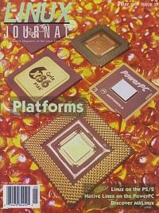

Shutdown Archive web server
Search:
Linux Journal
Issue #37/May 1997

Features
Linux On the PS/2
by David Weis
While still a challenge, it has recently become much easier to install Linux on a PS/2 with an ESDI drive. Here's how.
Linux/m68k: Linux on the Motorola 68000 Processor
by Chris Lawrence
In the midst of all the attention given to ports to evermore exotic hardware, it's easy to overlook the first production quality port: Linux/m68k. The current version is the most stable yet.
Native Linux on the PowerPC
by Cort Dougan
Users of the PowerPC no longer have to settle for less—here's how to run Linux on machines with the PCI bus.
Linux? On the Macintosh? with Mach?
by Vicki Brown
The answer is an emphatic yes: Disover MkLinux.
News & Articles
Tcl/Tk with C for Image Processing
by Siome Klein Goldenstein
Internet Servers in Perl
by Mike Mull
An Interview with DEC
by John “maddog” Hall and David Rusling
Safely Running Programs as root
by Phil Hughes
LJ
Interviews Przemek Klosowski
by Marjorie Richardson & Lydia Kinata
Python Update
by Andrew Kuchling
Reviews
Product Review
FairCom's C-tree Plus
by Nick Xidis
WWWsmith
Re-linking Multi-Page Web Documents
by Jim Weirich
At the Forge
Missing CGI.pm and Other Mysteries
by Reuven Lerner
Book Review
World Wide Web Journal
by Danny Yee
Columns
Letters to the Editor
Letter from the Editor: Changes at
LJ
Stop the Presses
Linux and Web Browsers
by Phil Hughes
Linux Means Business
Connecting SSC via Wirelss Modem
by Liem Bahneman
Linux Apprentice
Paths
by Lynda Williams
Take Command
ncpfs—Novell Netware Connectivity for Linux
by Shay Rojansky
Kernel Korner
The “Virtual File System” in Linux
by Alessandro Rubini
Linux Gazette
Tips from the Answer Guy
by James T. Dennis
New Products
Best Of Tech Support
Archive Index
Shutdown Archive web server
Search:
Copyright © 1994 - 2018
Linux Journal
. All rights reserved.